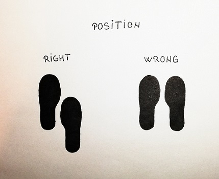
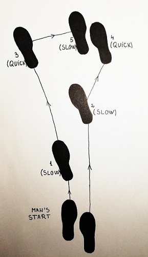
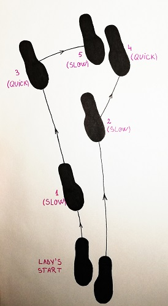

Tango steps (American Style Tango)
8-Count Basic
The Tango 8-Count Basic (sometimes simply called the Tango Basic) is a simple combination of two slow walks and a "Tango Close". The five steps are counted "Slow, Slow, Quick Quick Slow", resulting in a total of 8 counts. When social Tango was first introduced, many instructors used a simple vocal cue to help their students remember the steps: "T - A - N - G - O", or "Walk, Walk, Tan - Go - Close". The latter cue would help beginners remember when to close the feet, and thus the term Tango Close came to describe the last three steps.
First of all !
Foot position


Man's steps (forward)
Start position (facing line of dance)
Rhythm - Slow, slow, quick, quick.

Woman's steps (backwards)
Start position (backwards or against the line of dance)
Rhythm - Slow, slow, quick, quick.
Tango Walks
Tango employs a unique style of walk with the following characteristics:
- • The feet are picked up and placed onto the floor with a quick staccato action.
- • Each walk begins and ends with knees flexed, and there is no rise & fall, sway or body flight.
- • Walks typically curve gradually to the left. On forward walks, the left foot being placed along the track of the right foot "in CBMP", while the right foot walk is taken with the right side of the body slightly in advance of the left. On backward walks, the right foot is placed in CBMP, while the left foot walk is taken with the left side of the body slightly in advance of the right.
Accounting for the Curve
When executed properly, Tango Walks naturally curve to the left. This results in a complex movement that is constantly changing the dancers' orientation in the room. The best solution to simplify your understanding of alignments in Tango is to regard the line of dance not as a rectangle, but as an elliptical shape that is itself continually curving around the room. In this way it is possible to say that a series of basic walks can curve gradually while still maintaining the alignment "facing line of dance".
Tango Walks can be taken with varying degrees of curvature, which allows dancers to accommodate the sizes and shapes of various rooms. Increasing the curve also gives dancers the ability to reorient themselves with respect to the line of dance, in order to execute figures with specific alignments. For example, one can begin facing diagonally toward the wall and take two walks, curving 1/4 to left to end facing diagonally toward the center.
This figure can be commenced with the dancers facing any alignment, as long as the goal is to move in the general direction of line of dance. For example, the couple can begin with the man facing diagonal wall, diagonal center or line of dance and continue along the same path. However, if they begin facing an alignment that works against line of dance (e.g. man facing diagonal wall against line of dance), a strong turn should be used to redirect the movement toward line of dance as quickly as possible.
Beginners are often taught initially to dance with no curve in the movement at all, which simplifies the execution of the action as well as the concept of moving around the line of dance. In this beginning stage of a student's learning, it is easier to take the simpler, rectangular approach to the line of dance until the more characteristic foot and body positions are introduced.